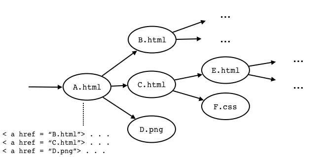

Última actualização: 23 de Maio de 2021.
Neste projecto pede-se o desenvolvimento de código concorrente para (1) implementações de conjuntos, (2) um crawler de páginas web, e ainda (3) a análise de bugs em código concorrente usando o Cooperari.
O projecto pode ser realizado individualmente ou em grupos de 2 alunos no máximo, devendo ser entregue até 11 de Junho. A entrega deve ser feita via Teams submetendo:
É fornecido um arquivo ZIP com o código base para a realização do trabalho. O código está pronto para uso em replit.com caso pretenda, mas no que toca às avaliações de desempenho pedidas neste enunciado deverá usar um computador seu para resultados mais fiáveis.
Para compilar o código deverá usar o script compile.sh:
./compile.shPara executar um programa deverá usar o script run.sh:
./run.sh nome.da.classeO interface ISet em src/pc/ISet.java exprime um TAD para um conjunto com as seguintes operações:
size(): devolve o tamanho do conjunto;add(e): adiciona elemento e ao conjunto;remove(e): remove elemento e do conjunto;contains(e): testa se elemento e pertence ao conjunto.Consideramos implementações deste interface usando uma representação interna na forma de uma tabela de "hashing" com o típico esquema de endereço aberto: os elementos do conjuntos são dispersos por entradas na tabela de "hashing", em que cada entrada contém uma lista ligada de elementos implementada por objectos de tipo LinkedList); note que esta classe não tem qualquer mecanismo de sincronização entre threads.
Para simplificar as implementações:
add(e), remove(e) e contains(e) lançam IllegalArgumentException quando e == null; Deverá usar e adaptar se achar conveniente o programa SetTest para validação básica das suas implementações.
Deverá usar e adaptar se achar conveniente o programa SetTest para validação básica das suas implementações, por exemplo para LHashSet0:
$ ./run.sh pc.set.SetTest pc.set.LHashSet0
all seems ok :)LHashSet0O código já dado em LHashSet0 define uma implementação concorrente de um conjunto em que exclusão mútua é garantida usando métodos synchronized. Deverá usá-la como ponto de partida para a implementação concorrente das seguintes classes.
LHashSet1Substituindo o uso de synchronized, a implementação deve empregar um objecto ReentrantLock para garantir acesso exclusivo aos dados para todas as operações (add, contains, remove e size).
LHashSet2Partindo da implementação anterior, observe que contains e remove não alteram um conjunto e que podemos empregar antes ReentrantReadWriteLock tal que add e remove adquirem "locks" de escrita enquanto contains e size só precisam de "locks" de leitura. Desta forma operações de leitura podem proceder concorrentemente, enquanto as de escrita terão na mesma exclusão mútua no acesso aos dados.
LHashSet3Em vez de um "lock" global, considere um "lock" por entrada na tabela de "hashing", tal que uma thread só bloqueia se houver outra thread a aceder à mesma entrada da tabela. Podemos então ter concorrência efectiva nas operações add(), contains() e remove() executadas threads diferentes quando estas não acederem à mesma entrada na tabela de hashing.
Sugere-se a criação de um array de objectos ReentrantReadWriteLock logo no construtor
com a mesma dimensão da tabela de "hashing", ou converter
as entradas da tabela em pares "lock"/lista.
Remova na implementação o campo size pois a sua actualização iria requerer na mesma um "lock" exclusivo.
Em vez disso o método size() deve somar o tamanho de todas as listas para determinar o tamanho do conjunto, adquirindo primeiro todos os locks e libertando-os depois da contagem.
STMHashSetImplemente agora o conjunto usando STM, armazenando os dados com o forma já esquematizada em STMHashSet.java. Note que deverá percorrer e actualizar nós de uma lista duplamente ligada de forma explícita, em vez de usar objectos LinkedList (que não seriam adequados neste caso).
Nota: para comparar elementos guardados no conjunto deverá empregar como usual em Java o método equals() e não o operador ==.
O programa em SetBenchmark.java permite avaliar o desempenho de uma implementação de conjuntos. Pode ser executado usando:
./run.sh pc.set.SetBenchmark nome_da_classeonde nome_da_classe é uma classe que implementa o interface ISet, por exemplo pc.set.LHashSet0:
$ ./run.sh pc.set.LHashSet0
1 threads using LHashSet0 ... 9.72 Mops/s
2 threads using LHashSet0 ... 3.90 Mops/s
4 threads using LHashSet0 ... 3.23 Mops/s
8 threads using LHashSet0 ... 3.01 Mops/sO programa varia o nº de threads activas de 1 a 8 em múltiplos de 2). Para cada nº de threads, o programa executa os seguintes passos: cria um conjunto da classe especificadas, executa operações sobre o conjunto durante 10 segundos, e depois apresenta o desempenho do conjunto expresso em milhões de operações por segundo (Mops/s).
As operações sobre o conjunto executadas durante os 10 segundos são add(), remove() e contains() numa proporção de 10 %, 10 % e 80 % respectivamente.
Use o programa uma avaliação do desempenho de LHashSet0 e das outra classes que implementou, tirando a média do tempo de 5 execuções para cada cada classe e configuração do nº de threads.
No relatório apresente os resultados na forma de uma tabela ou um gráfico e as conclusões principais que pode tirar dos mesmos. Para resultados tão fiáveis quanto possíveis, use o seu PC e não o ReplIt, e não tenha activos outros programas para além do estritamente necessário (ex. apenas o terminal da linha de comandos).
Em src/pc/crawler é disponibilizado o código para um "crawler" de páginas web que opera de forma sequencial, e ainda para um servidor HTTP simples de conteúdos estáticos.
Ao encontrar conteúdo HTML, o "crawler" pesquisa no ficheiro "links" do tipo (< ahref="..." >) para páginas ou outros ficheiros no mesmo servidor, tendo o cuidado de não descarregar ficheiros repetidos.
O objectivo é programar um crawler que opere de forma concorrente (e correcta!) isto é, que empregue várias threads descarregando e processando várias páginas ao mesmo tempo, de novo sem descarregar páginas repetidas como o crawler sequencial. Deve ainda avaliar o desempenho da sua implementação.

O código do servidor é dado em WebServer.java.
Pode iniciar o mesmo usando o script wserver.sh [home] [threads] [port], onde:
home é o directório raíz de páginas a servir cooperari-0.4/doc/javadoc (a documentação Javadoc do Cooperari que pode servir de teste);threads é o número de threads empregue internamente na resposta a pedidos, 4 por omissão;port é a porta usar, 8123 por omissão - poderá por exemplo abrir um browser no endereço http://localhost:8123 para interação com o servidor.$ ./run.sh pc.crawler.WebServer
20 May 2021 21:36:26 GMT | Home: cooperari-0.4/doc/javadoc
20 May 2021 21:36:26 GMT | Port: 8123
20 May 2021 21:36:26 GMT | Threads: 4
20 May 2021 21:36:26 GMT | Starting server ...
20 May 2021 21:36:26 GMT | Server started /0:0:0:0:0:0:0:0:8123
20 May 2021 21:36:35 GMT | 1 | Request for '/constant-values.html'
20 May 2021 21:36:35 GMT | 1 | Sending /constant-values.html (text/html, 12024 bytes)
20 May 2021 21:36:35 GMT | 2 | Request for '/stylesheet.css'
20 May 2021 21:36:35 GMT | 3 | Request for '/script.js'
20 May 2021 21:36:35 GMT | 2 | Sending /stylesheet.css (application/octet-stream, 12842 bytes)
20 May 2021 21:36:35 GMT | 3 | Sending /script.js (application/octet-stream, 827 bytes)
...O código do "crawler" sequencial é dado em SequentialCrawler.
Pode iniciar o mesmo usando o script scrawl.sh [root_url], onde:
root_url é o URL de partida, http://localhost:8123 por omissão;
$ ./run.sh pc.crawler.SequentialCrawler
20 May 2021 21:43:10 GMT | Starting at http://127.0.0.1:8123/
20 May 2021 21:43:10 GMT | 1 | http://127.0.0.1:8123/ | 200 | 964 bytes | text/html
20 May 2021 21:43:10 GMT | 2 | http://127.0.0.1:8123/constant-values.html | 200 | 12024 bytes | text/html
20 May 2021 21:43:10 GMT | 3 | http://127.0.0.1:8123/overview-tree.html | 200 | 37017 bytes | text/html
20 May 2021 21:43:10 GMT | 4 | http://127.0.0.1:8123/index.html | 200
...
20 May 2021 21:43:11 GMT | 353 | http://127.0.0.1:8123/org/cooperari/feature/data/class-use | 200 | 1042 bytes | text/html
20 May 2021 21:43:11 GMT | 354 | http://127.0.0.1:8123/org/cooperari/feature/thread/class-use | 200 | 1798 bytes | text/html
Done: 354 transfers in 1115 ms (317.49 transfers/s)Implemente o crawler concorrente em ConcurrentCrawler.java e teste-o com o script ./ccrawl.sh t url onde t é o número de threads a usar e url é o ponto de partida (http://localhost:8123 de novo por omissão).
A parte da lógica de download e extração de links já é dada em BaseCrawler.java (BaseCrawler é a classe base de SequentialCrawler e ConcurrentCrawler) através dos métodos download e parseLinks.
Pode usar para sua implementação classes da Java API base de threads e outras em java.util.concurrent excepto as relacionadas com "thread pools" (deve criar qualquer thread usada pelo "crawler" de forma explícita). A abordagem mais imediata será tentar generalizar (de forma correcta) o algoritmo do crawler sequencial para um contexto concorrente.
No relatório apresente uma descrição da sua implementação, em particular da lógica de execução concorrente e manipulação de estado partilhado e sincronização que haja entre threads.
Pode testar e avaliar inicialmente o seu "crawler" sobre a documentação Javadoc do Cooperari ou sobre o directório raíz do projecto.
Quando a sua implementação estiver estável poderá usar a documentação Javadoc do JDK 8 em formato HTML para uma avaliação mais intensiva - baixe o arquivo jdk8-javadoc.zip contendo esse material. Então:
Em src/pc/cdl encontra:
CountDownLatch.java: ficheiro contendo as implementação correctas e incorrectas de uma "count-down latch" que vimos nas aulas (ver slides das aulas teóricas);Test.java: programa de teste para as implementações. Use
./c.java.sh pc.cdl.Test <n>para executar o programa de teste onde <n> é um valor de 1 a 4, por exemplo:
$ ./cjava.sh pc.cdl.Test 1
Configuring load-time weaving ...
JAR file for 'pc.cdl.Test' saved to './cdata/pc.cdl.Test-cooperari.jar'
[<0>] --- start ---
...
[<0>] --- start ---
[<0>] class = pc.cdl.CountDownLatch_Bug1, n = 2
[AW0] wait 2
[CD1] 1
[AW1] wait 1
[CD0] 0
[AW0] done
> trials: 4 time: 203 ms coverage: 39.0 % (16 / 41 yp)
> failure trace: '/Users/edrdo/Desktop/Worklog/2021/aulas/pc/homepage/projecto/cdata/pc.cdl.Test/pc.cdl.Test.4.trace.log'Executado a forma acima, o programa irá lançar 4 threads, 2 das quais invocam o método countDown() e outras 2 o método await(). Pode também executar cjava pc.cdl.Test 0 para que o programa empregue a implementação correcta da "count-down latch".
Exponha no relatório uma análise da execução do programa de teste usando o Cooperari para cada uma das 4 implementações incorrectas. Na sua análise faça uma relação com os logs de erro gerados pelo Cooperari, em particular os passos relevantes das threads envolvidas que levam à falha dos testes.